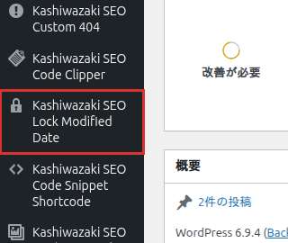

インストール・初期設定
Kashiwazaki SEO Lock Modified Date のインストール方法と、更新日ロック機能を利用するための基本設定を説明します。
インストール手順
WordPress管理画面から プラグイン > 新規追加 に移動し、「Kashiwazaki SEO Lock Modified Date」を検索します。または、プラグインのZIPファイルを プラグイン > 新規追加 > プラグインのアップロード からアップロードします。
「今すぐインストール」をクリックし、インストール完了後「有効化」をクリックします。
有効化後、対象の投稿タイプ（初期状態は投稿と固定ページ）の編集画面に「Kashiwazaki SEO Lock Modified Date」メタボックスが追加されます。対象の投稿タイプは設定画面で変更できます。
設定「デフォルトでロックする」は初期状態で ON です。ロック状態がまだ記録されていない既存の投稿も、この設定に従ってロックされます。ロックしたくない投稿は、メタボックスで個別に解除するか、一括ロック解除を利用してください。

メタボックスの確認
プラグインの有効化後、投稿の編集画面に「Kashiwazaki SEO Lock Modified Date」メタボックスが表示されていることを確認します。
メタボックスの構成要素
| 要素 | 説明 |
|---|---|
| 更新日をロックする | ロックの ON/OFF を切り替えます。切り替えた時点で保存されます。ON の公開済み投稿は、保存しても更新日が変わりません。 |
| 現在の更新日時 | 保存されている post_modified の日時を表示します。ブロックエディタで投稿を保存したあとも自動で最新の値に更新されます。 |
| 更新日を手動で変更 | 日時を選んで「更新日を変更」を押すと、その場で更新日が変わり、ロックが ON になります。「公開日と同じにする」で公開日時（秒まで）を指定できます。 |
クラシックエディタとブロックエディタ（Gutenberg）の両方でメタボックスが利用できます。ブロックエディタでは、設定サイドバーまたは画面下部のメタボックス領域に表示されます。
基本的な運用方針
本プラグインの効果を最大化するための基本的な運用方針を以下に示します。
| 編集の種類 | 推奨する操作 |
|---|---|
| 誤字・脱字の修正 | ロック ON のまま保存。更新日は変わりません。 |
| フォーマット・レイアウト調整 | ロック ON のまま保存。更新日は変わりません。 |
| 内部リンクの追加・修正 | ロック ON のまま保存。更新日は変わりません。 |
| コンテンツの大幅なリライト | 保存後に「更新日を手動で変更」で現在の日時を指定する（ロックは ON のまま）。または、ロックを解除してから保存する。 |
| 最新情報への更新 | 「更新日を手動で変更」で日時を指定する。押した時点で反映され、ロックが ON になります。 |
本プラグインはフロントエンド出力（JSON-LD、メタタグ）を一切行いません。管理画面でのみ動作するため、サイトの表示速度に影響を与えません。